Empty state review · 2026-11-01
用一份空数据库（临时库，没碰 data/health.db）把 15 个页面全跑了一遍，再把手写的档案底稿 assets/data.js 也清空跑了一遍。结论是：这个项目有两层「没数据」，它们的样子完全不同。
检验、体重、睡眠、体征、症状、饮食这些「记录型」页面全空，但总览、健康问题、时间线、用药、待办、个人资料仍有内容 —— 它们来自 data.js 里手写的档案，不来自数据库。
15 个页面都能打开、都有空态文案。改之前总览和减重页会整页崩（缺「长期目标」时 toFixed 报错），而且崩完页面还停在上一页，什么都不说。
库空的时候，原来会用档案里的「起点体重」补一条看起来像实测的记录（体重明细里真的算 1 条）。现在库是空的就承认空。
这是「换了台电脑 / 清空了数据库但档案还在」的样子。记录型页面给引导卡，档案型页面照常显示。
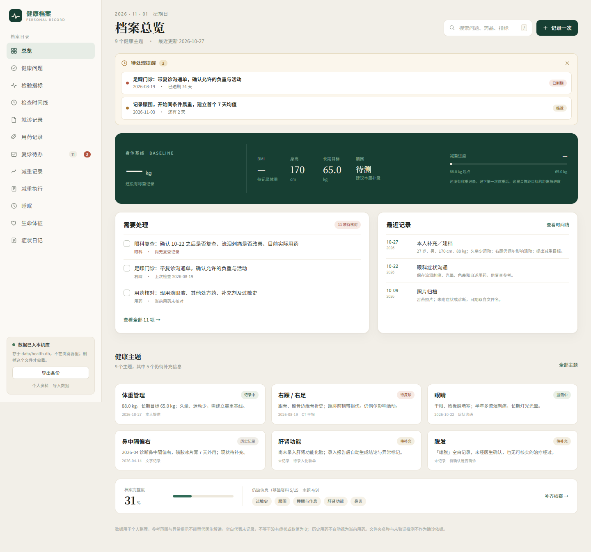
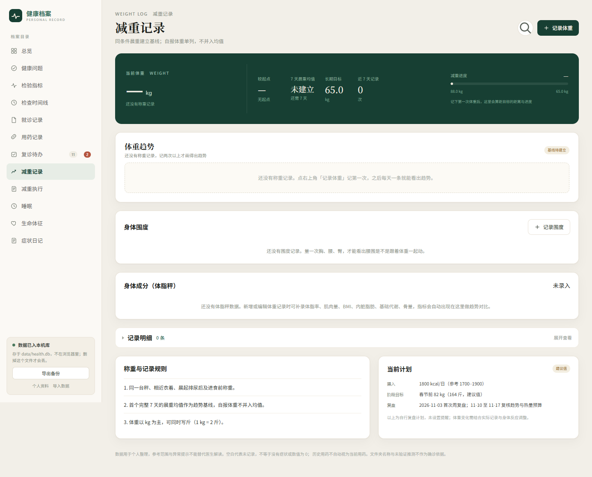
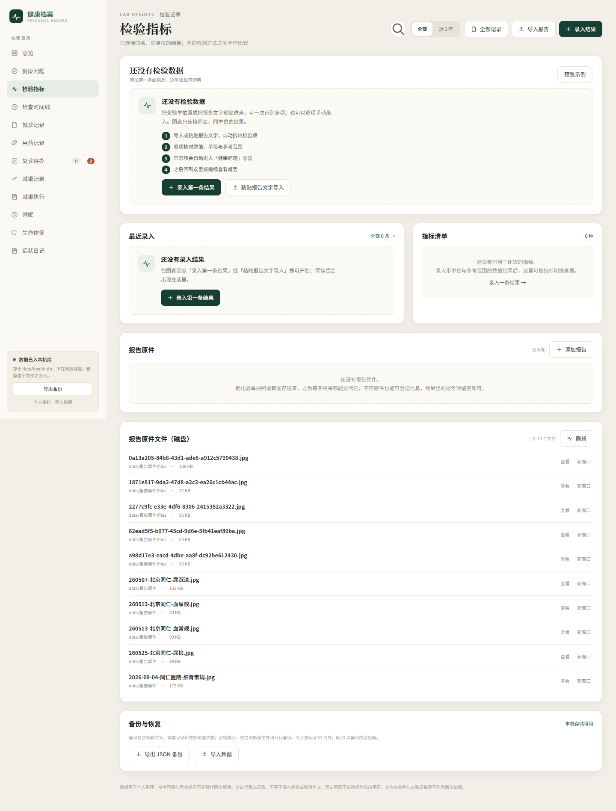
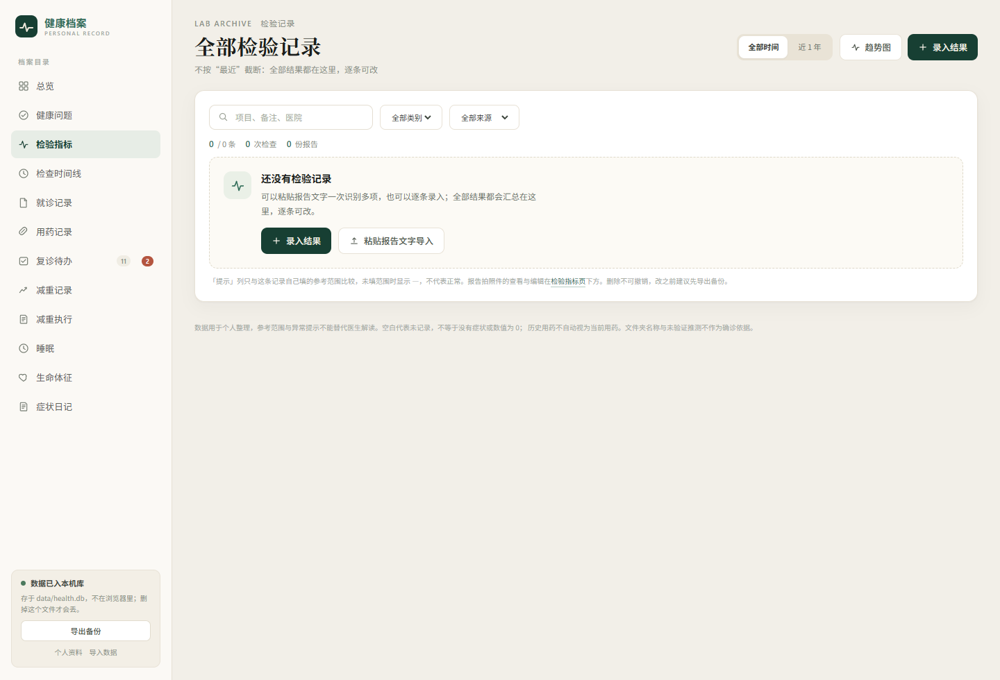
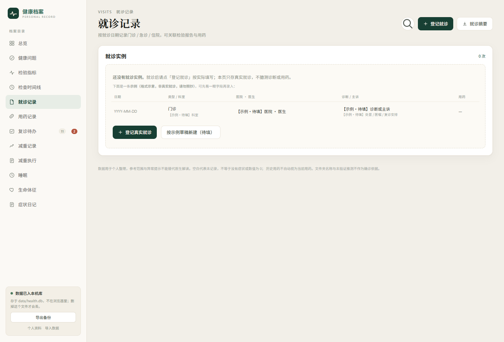
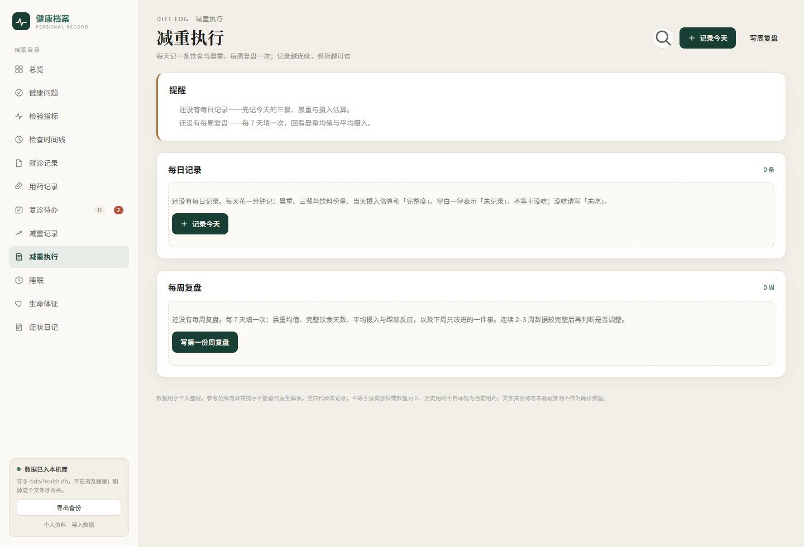
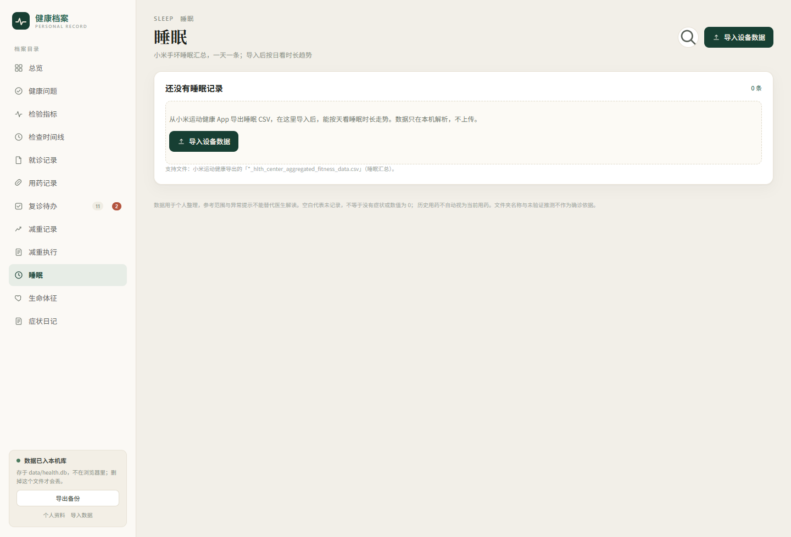
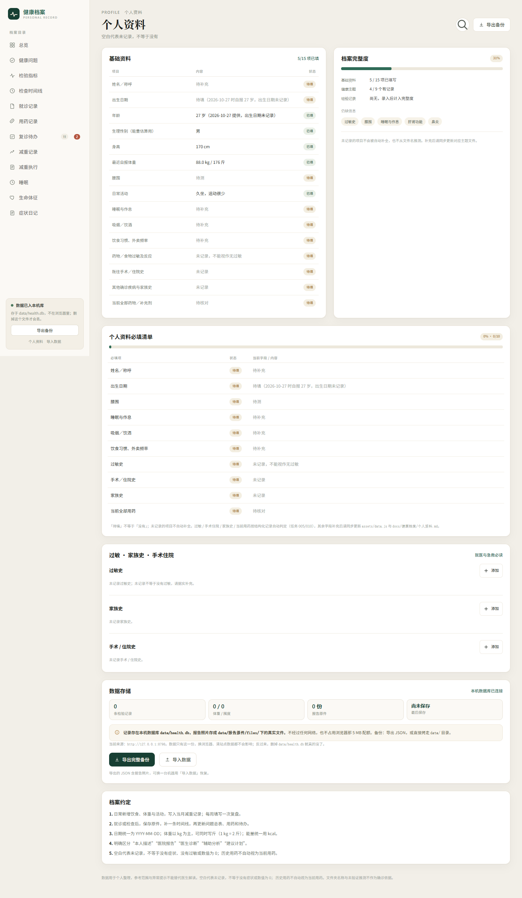
把 data.js 换成空骨架再跑一遍 —— 相当于把项目交给一个没有任何病史的人。
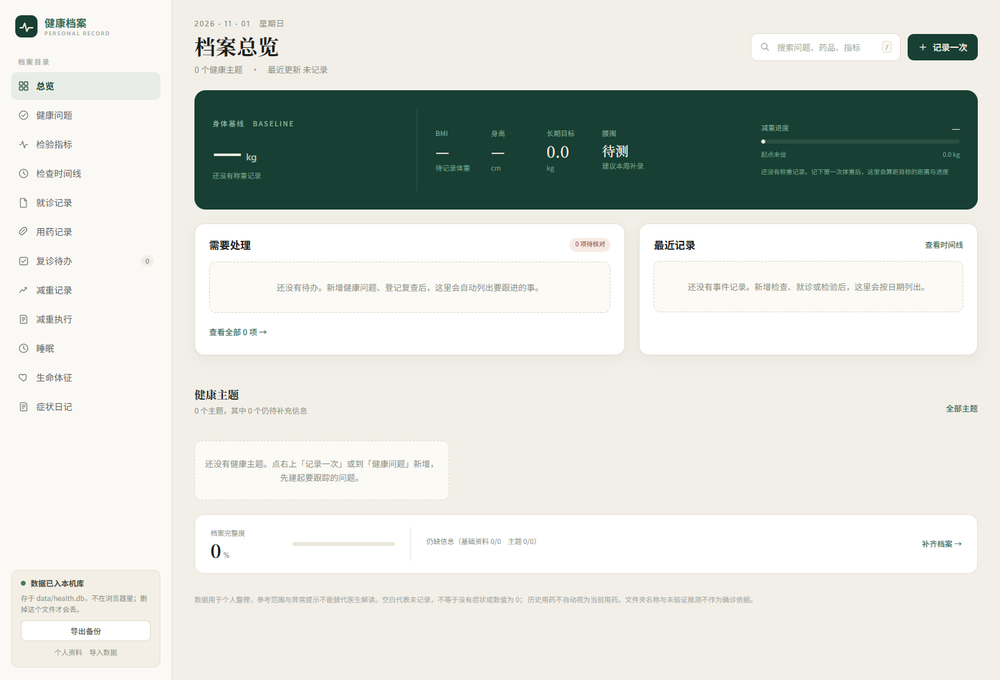
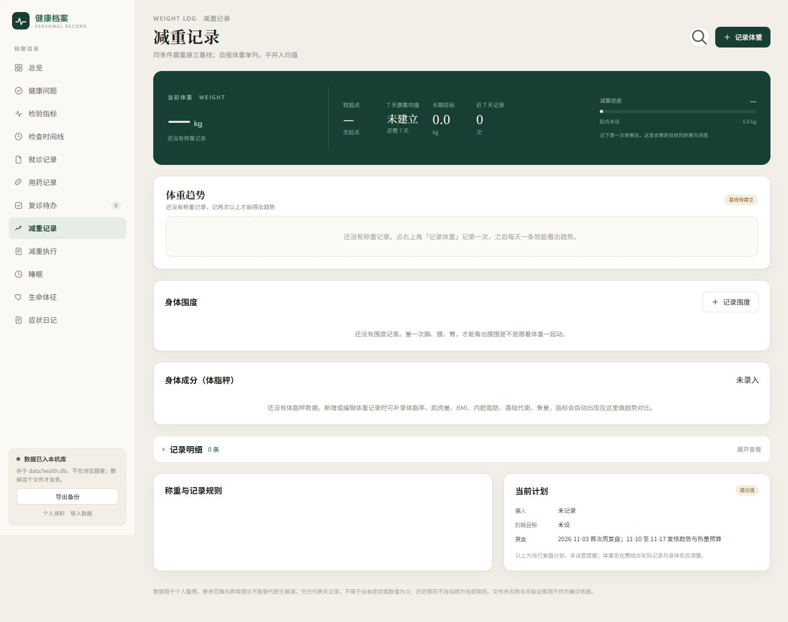
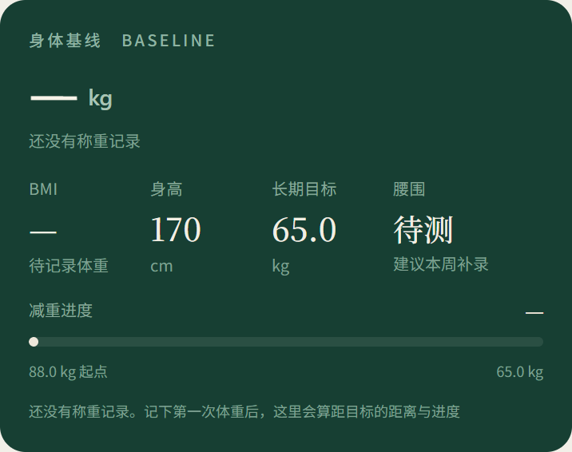
15 个路由，空库状态下的表现。
| 页面 | 没数据时的样子 | 判定 |
|---|---|---|
| 总览 | 档案内容照常；体重、BMI、进度显示「—」并写明原因 | 已修 |
| 健康问题 | 9 个主题来自档案；空档案时给「先建一个问题」的提示 | 可用 |
| 检验指标 | 四步引导卡 + 四处分区空态 | 标杆 |
| 全部检验记录 | 空表 + 计数 0 + 起点提示 | 可用 |
| 检查时间线 | 档案事件按年分组；空档案时整页只有一句页脚 | 偏空 |
| 就诊记录 | 示例行 + 「登记真实就诊 / 按示例草稿新建」 | 可用 |
| 就诊摘要 | 「选一次就诊或填日期区间」+ 两个跳转 | 可用 |
| 用药记录 | 结构化用药 0 条 + 档案里的历史用药对照 | 可用 |
| 复诊待办 | 档案 11 项；空档案时显示「还没有待办」 | 可用 |
| 减重记录 | 当前体重 —、趋势给一行说明、围度/成分各有空文案 | 已修 |
| 减重执行 | 提醒卡 + 两块空态，文案重复三次 | 可再收 |
| 睡眠 | 一张卡 + 导入入口 + 支持文件说明 | 偏空 |
| 生命体征 | 一张卡 + 参考区间说明 | 偏空 |
| 症状日记 | 一张卡 + 自评说明 | 偏空 |
| 个人资料 | 15 项待填清单 + 缺项提示 + 完整度 | 可用 |
app.core.js 里去掉了「库空就用档案起点补一条」的种子，服务端返回空就是空。.chart-box 的 300px 最小高度。